UCI Cinemas
Il redesign dell’app per comprare biglietti, ordinare al bar e farsi consigliare da Iris, un’assistente AI.
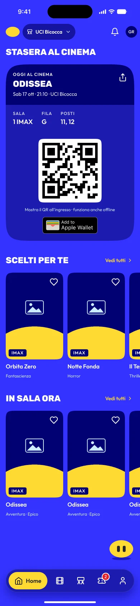
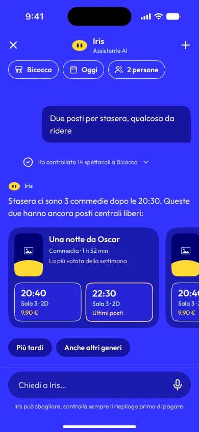

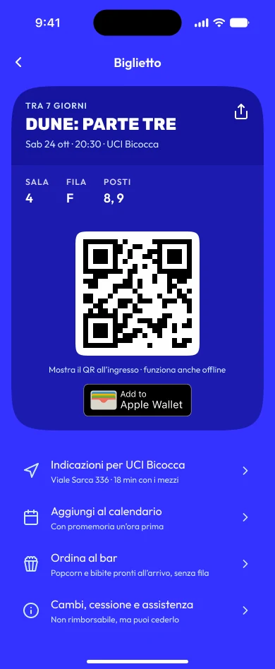
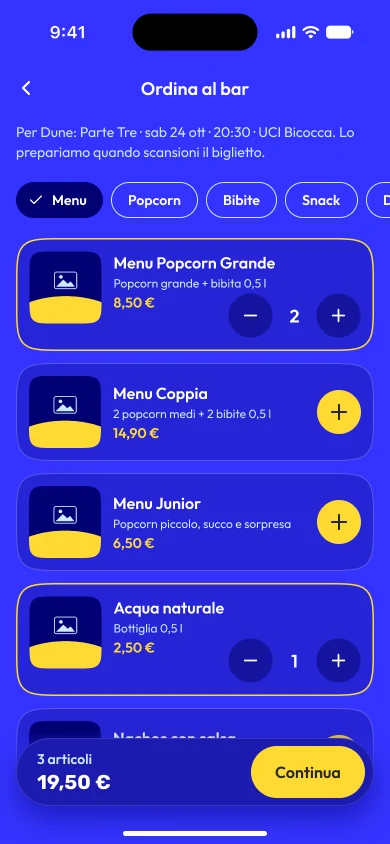
In breve
Problema
Comprare un biglietto richiede troppi passaggi, e l’acquisto rapido non aiuta a scegliere il film.
Il mio ruolo
Progetto individuale: discovery, brand identity, UX, UI, design system, accessibilità e motion.
Cosa ho fatto
Nuova identità, 85 schermate in 9 aree, 80 componenti e Iris, l’assistente AI che guida l’acquisto.
Risultato
Un prototipo completo e accessibile, con un’identità riconoscibile, pronto per i test con utenti.
Il film del progetto
Descrizione del video
- Iris sbuca da un buco nero, salta fuori e si presenta.
- Il manifesto «Watching movies better» con gli occhi delle ucicons.
- Il logo e le sue varianti su bianco, nero e giallo, poi il simbolo da solo.
- La palette: sette colori, ognuno con il suo codice esadecimale e il suo ruolo.
- La tipografia: Rubik per i titoli, Outfit per i testi.
- Le sei ucicons animate.
- L’app in una serata: chiedi a Iris, lei cerca e trova il film, scegli i posti, confermi tu il pagamento, entri con il QR, ordini al bar senza fila e guadagni punti myUCI.
- Chiusura: Iris, il logo e «Il cinema, a modo tuo».
Il progetto
Ho riprogettato da zero l’app UCI Cinemas come progetto personale, partendo da una brand identity nuova. L’obiettivo: rendere più semplice e veloce l’acquisto del biglietto e sostituire l’acquisto rapido con Iris, un’assistente AI che trova film, orari e posti.
Il progetto in numeri
85
schermate, con percorsi principali e stati alternativi
9
aree, dal primo accesso al profilo e fedeltà
80
componenti nel design system, in due temi
1
assistente AI, Iris, al posto dell’acquisto rapido
Processo
Dalla discovery all’accessibilità, con il design system al centro.
Discovery
Problema riformulato e assunzioni mappate prima di disegnare qualsiasi schermata.
Brand e design system
Nuova identità, token e componenti con varianti, stati e changelog.
Flussi
85 schermate: percorso principale, errori, vuoti, offline e caricamento per ogni area.
Accessibilità
Leggibilità e contrasti verificati in entrambi i temi, con le correzioni riportate nel design system.
Brand identity
Una nuova identità costruita attorno a un solo segno: l’ellisse gialla. È il logo, il simbolo dell’app, il pulsante di Iris e il gesto che lega ogni animazione.
Watching movies better.
Colore
- #3433FFBrandSfondo principale e tema Blue
- #FFDA33AccentoEllisse, azioni principali, Iris
- #FEFEFESuperficiTesti e superfici chiare
- #272727InchiostroTesti su giallo e tema Dark
- #010073ProfondoCard e livelli in profondità
- #33B4FFLuceInformazioni e stati attivi
- #CCECFFTenueTesti secondari su blu
Tipografia
Aa
Rubik
Titoli, in Black e maiuscolo
Aa
Outfit
Testi ed etichette, da Regular a SemiBold
Ucicons
- L’ellisse che sbuca dal buco: il simbolo in movimento
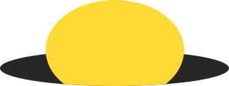
- Gli occhi: guardare il cinema meglio
- Il popcorn a righe del bar
- La cinepresa
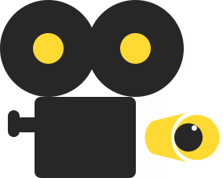
- Le maschere del teatro
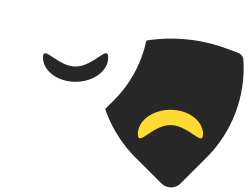
- Il biglietto
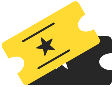
Iris, l’assistente
Al posto dell’acquisto rapido c’è Iris: un’ellisse gialla minimal con due occhi squadrati che ricordano i fori della pellicola. Si apre dalla Home e guida l’acquisto in conversazione: film, orari, posti, riepilogo.
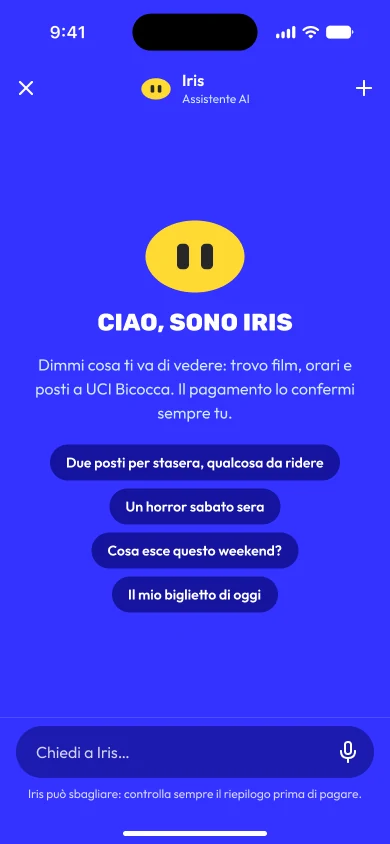
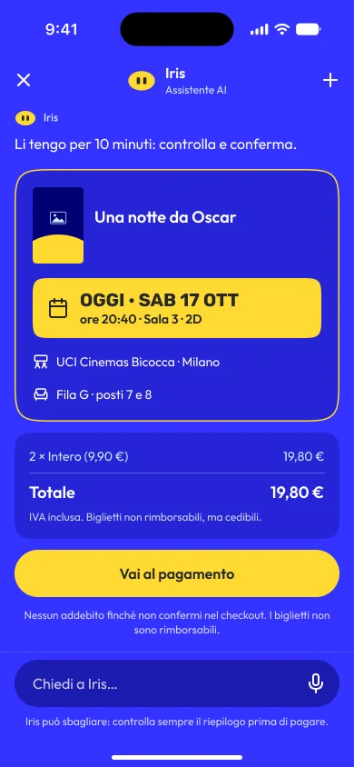
Le 9 aree dell’app
- Onboarding e accesso
- Home
- Acquisto classico
- Acquisto con Iris
- I miei biglietti
- Ordina al bar
- Film
- Cinema
- Profilo e fedeltà
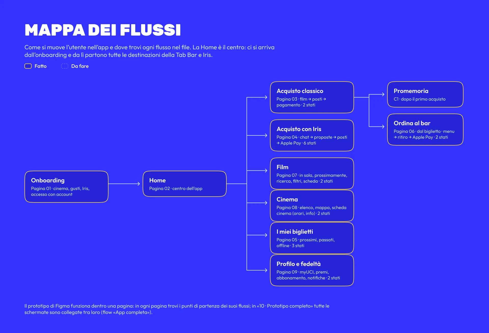
Design system
Ogni schermata usa componenti del design system: prima si riusa ciò che esiste, poi si crea il nuovo e lo si aggiunge alla libreria, con ogni modifica nel changelog.
Barre flottanti sopra il contenuto (Tab Bar, riepilogo, azioni), con sfumatura al bordo di scorrimento.
Forme coerenti a ogni livello, dalle card ai pulsanti, per un’interfaccia morbida e ordinata.
Icone essenziali e azioni sempre nello stesso punto: chi usa l’app sa dove guardare.

Accessibilità
Leggibile in ogni tema
Contrasti verificati nel tema blu e in quello scuro, per testi e stati sempre chiari.
Facile da toccare
Pulsanti e controlli con aree ampie, comodi anche con una mano sola.
Per tutte le persone
Testi che si ingrandiscono, supporto agli screen reader e informazioni mai affidate al solo colore.
Cosa ho imparato
Partire dal design system ha reso più veloci le 85 schermate: ogni componente nuovo entrava subito in libreria, con il suo changelog.
Rifarei la scelta di far confermare sempre il pagamento all’utente: un’assistente AI deve aiutare a decidere, non decidere al posto tuo.
Cambierei il momento della verifica di accessibilità: alcuni contrasti li ho corretti a schermate finite. Oggi li controllo già quando definisco i colori.
Prossimi passi
Test con utenti, pagamenti digitali, immagini definitive e passaggio agli sviluppatori.
Prossimo progetto: Jet HR
Web app e app mobile · progetto personale
L’area dipendente e una busta paga che si capisce: le domande vere dei dipendenti al centro, gli stessi componenti su desktop e mobile.